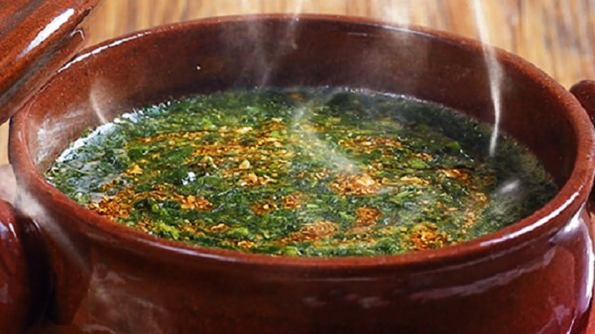

home
molokhia-recipe

Description
Molokhia is one of Egypt's most iconic and beloved national dishes. It is a savory, nutritious green soup made from the finely minced leaves of the Jute Mallow plant.
The magic of Molokhia lies in its unique, silky texture and the rich broth (usually chicken or rabbit) it is cooked in. However, the true soul of the dish is the 'Tasha'—a sizzling mixture of crushed garlic and dry coriander fried in ghee, added at the very last moment to create an irresistible aroma.
Traditionally, it is served hot alongside vermicelli rice, roasted chicken, and a side of pickled peppers or onions in vinegar for a perfect balance of flavors.
Ingredients
- 500g Minced Molokhia leaves (fresh or frozen).
- 4-5 cups Chicken or Rabbit broth.
- 6-8 cloves of Garlic, crushed.
- 1 tablespoon Dry Coriander.
- 1 tablespoon Ghee or Butter.
- Salt and Pepper to taste.
- A pinch of Sugar (optional).
Steps
- Boil the Broth: In a medium pot, bring the chicken or rabbit broth to a boil over medium-high heat.
- Add Molokhia: Lower the heat and add the minced Molokhia leaves to the boiling broth.
- Stir Well: Use a whisk or a large spoon to stir constantly until the Molokhia is well combined and the texture is smooth with no lumps.
- Simmer: Let the soup simmer gently for about 2 minutes. Tip: Do not cover the pot and do not let it over-boil so the leaves don't settle at the bottom.
- Prepare the Tasha: In a small frying pan, heat the ghee or butter. Add the crushed garlic and stir until it starts to turn golden.
- Add Coriander: Add the dry coriander to the garlic and fry for another 30 seconds until it smells amazing and looks golden-brown.
- The Final Touch: Pour the sizzling garlic mixture immediately over the Molokhia soup.
- Serve: Serve hot with vermicelli rice, roasted chicken, and some pickled peppers.